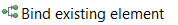
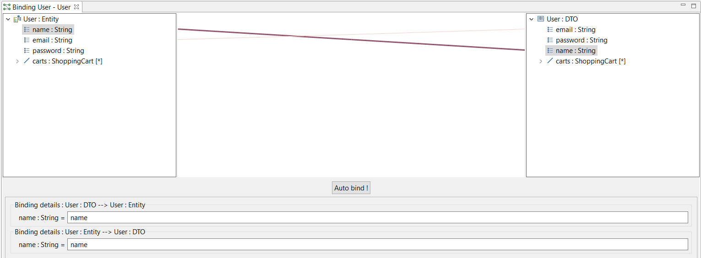
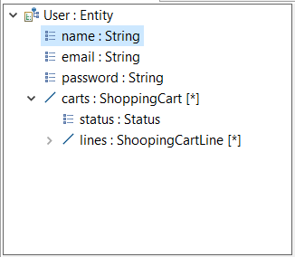
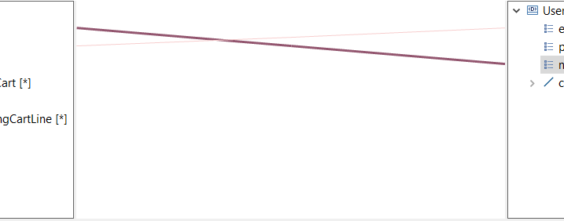
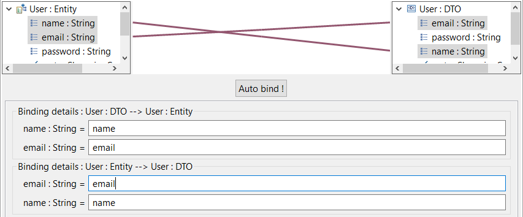

Copyright © 2008, 2024 Obeo – All rights reserved. This program and the accompanying materials are made available under the terms of the Eclipse Public License v2.0
L’outillage de databinding permet de modéliser le databinding entre des structures de données.
Une structure de données est soit un type structuré (
Entity du modeleur Entity,
DTO du modeleurb SOA ou
Domain class du modeleur Graal) soit un
ViewContainer du modeleur Cinematic.
L’objectif classique est de spécifier la façon dont ces structures de données vont être transformées pour convertir par exemple une
Entity en
DTO.
Pour définir un databinding entre
ViewContainer et les autres structures de données, il est recommandé d’utiliser la vue
View Container Mockup.
En effet, la vue Mockup fournit des fontionnalités d'édition de plus haut niveau que l'éditeur de databinding.
L’outillage de databinding embarque un point vue fournissant :
Pour activer le point de vue IS Databinding, sur une session Viewpoint ouverte, lancer le menu
Viewpoint Selection
Choisir le point de vue IS Databinding.
Le
Databinding Diagram permet de créer un
Binding entre deux types structurés ou un
ViewContainer et un type structuré. Cet objet peut ensuite être édité en détail en lançant l'éditeur spécifique
Binding editor par un double-clic sur l'élément.
Ce diagramme peut être créé sur un package (
Namespace) ou sur un
ViewContainer n’ayant pas comme parent un autre
ViewContainer.
Les éléments suivants sont affichés sur le diagramme :
Les outils fournis par la palette sont :
| Création d’un Binding entre deux éléments. Un assistant permet de sélectionner une première structure de données, puis de sélectionner un deuxième type structuré dans toute la session de travail. | |
|  | Création d’un Binding entre une structure de données déjà affichée sur le diagramme et un deuxième type structuré. Un assistant permet de sélectionner ce deuxième type structuré dans toute la session de travail. |
Il est possible de naviguer depuis ce diagramme vers l'éditeur de binding :
L'éditeur de databinding est un éditeur spécifique permettant décrire en détail le databinding entre deux structures de données. Le moyen le plus simple pour l’ouvrir est de double-cliquer sur le Binding voulu sur le diagramme décrit au chapitre précédent.

Le contexte de l'éditeur de databinding est un BindingInfo. L'éditeur de databinding ne permet pas d'éditer simultanément d’autres BindingInfos contrairement à la vue View Container Mockup du modeleur Cinematic.
L'éditeur est divisé en différentes parties :

Cette vue présente les données structurées ainsi que les données contenues de manière arborescente.
Dans le cas des références ou des
ViewContainers, il est possible de les déplier pour avoir accès aux sous élements (types structurés ou
ViewElements).
A partir de cette vue, il est possible de sélectionner un élément à gauche ou à droite et de le faire glisser jusqu'à la vue opposée sur un autre élément. Ceci crée un BindingReference entre les deux éléments.
Lorsqu’un ou des éléments sont sélectionnés, les liens les concernant sont affichés de façon plus visible sur la zone centrale.

La zone centrale permet de visualiser les liens entre éléments.
Il est possible de sélectionner un ou plusieurs liens pour les rendre plus visibles. La sélection multiple se fait en maintenant la touche Ctrl enfoncée.
Lorsqu’un lien est sélectionné, les éléments liés sont mis en surbrillance et le contenu de la zone inférieure est mis à jour.
Quand des liens sont sélectionnés, un appui sur la touche Del permet de les supprimer après un message de confirmation.

La zone inférieure affiche les champs de saisie en fonction des liens sélectionnés :
Les champs de saisie permettent de saisir des expressions utilisées pour décrire comment les données sont converties. Le texte saisi n’est pas interprété, c’est à l’utilisateur de choisir le pseudo-langage qui lui convient le mieux.
La zone inférieure peut être réduite ou agrandie en hauteur en sélectionnant la limite de la zone centrale juste au dessus du bouton Auto bind !.
Le bouton Auto bind ! permet de créer automatiquement des liens entre les éléments à gauche et à droite nommés de la même façon.